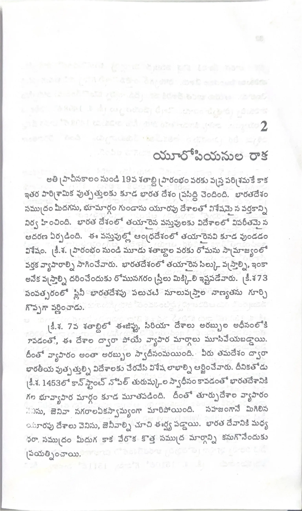

ముద్రిత పుట 31
scanతో మాన్యువల్గా ధృవీకరించిన పాఠ్యం

2 యూరోపియనుల రాక అతి ప్రాచీనకాలం నుండి 19వ శతాబ్ది ప్రారంభం వరకు వస్త్ర పరిశ్రమకే కాక ఇతర పారిశ్రామిక ఉత్పత్తులకు కూడ భారత దేశం ప్రసిద్ధి చెందింది. భారతదేశం సముద్రం మీదగను, భూమార్గం గుండాను యూరపు దేశాలతో విశేషమైన వర్తకాన్ని నిర్వహించింది. భారత దేశంలో తయారైన వస్తువులకు విదేశాలలో విపరీతమైన ఆదరణ ఏర్పడింది. ఈ వస్తువుల్లో ఆంధ్రదేశంలో తయారైనవి కూడ వుండడం విశేషం. (క్రీ.శ. ప్రారంభం నుండి మూడు శతాబ్దాల వరకు రోమను సామ్రాజ్యంలో వర్తక వ్యాపారాల్ని సాగించేవారు. భారతదేశంలో తయారైన సిల్కు వస్త్రాల్ని, ఇంకా అనేక వస్త్రాల్ని ధరించేందుకు రోమునగరం స్త్రీలు మిక్కిలి ఇష్టపడేవారు. (క్రీ.శ. 73 సంవత్సరంలో ప్లిని భారతదేశపు పలుచటి నూలువస్త్రాల నాణ్యతను గూర్చి గొప్పగా వర్ణించాడు. (క్రీ.శ. 7వ శతాబ్దిలో ఈజిప్టు, సిరియా దేశాలు అరబ్బుల ఆధీనంలోకి పోవడంతో, ఈ దేశాల ద్వారా పోయే వ్యాపార మార్గాలు మూసివేయబడ్డాయి. దీంతో వ్యాపారం అంతా అరబ్బుల స్వాధీనమయింది. వీరు తమదేశం ద్వారా భారతీయ ఉత్పత్తుల్ని విదేశాలకు చేరవేసి విశేష లాభాల్ని ఆర్జించేవారు. దీనికితోడు (క్రీ.శ. 1453లో కాన్ స్టాంట్ నోపిల్ తురుష్కుల స్వాధీనం కావడంతో భారతదేశానికి గల భూవ్యాపార మార్గం కూడ మూతపడింది. దీంతో తూర్పు దేశాల వ్యాపారం వెనిసు, జెనివా నగరాల ఏకస్వామ్యంగా మారిపోయింది. సహజంగానే మిగిలిన యూరపు దేశాలు వెనిసు, జెనివాల్ని చూచి ఈర్ష్య పడ్డాయి. భారత దేశానికి మధ్య ధరా సముద్రం మీదుగ కాక వేరొక కొత్త సముద్ర మార్గాన్ని కనుగొనేందుకు ప్రయత్నించాయి.